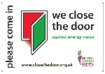

Bristol launches Crowdfunder for 2015 project
Posted by jeannie on November 14, 2014
Bristol Close the Door launches Crowdfunder appeal for initiative to coincide with Bristol as European Green Capital of the Year 2015. For details and to support go to:
http://www.crowdfunder.co.uk/bristol-close-the-door-weeks-2015/
Smithsonian Official Climate Change Statement
Posted by jeannie on October 2, 2014
Stark warning in Official Climate Change Statement from the Smithsonian Institute. http://www.smithsonianmag.com/smithsonian-institution/smithsonian-institution-announces-official-climate-change-statement-180952822/?no-ist
Campaign in People's March Against Climate Change, 21st September
Posted by jeannie on September 21, 2014
Close the Door joined the People's March Against Climate Change in London. Unseasonably warm weather and time to swing into action with preparations for the campaign's winter 2014/15 season.
Support for the Campaign from Paul Maynard MP
Posted by jeannie on June 16, 2014
Our thanks go to Paul Maynard, MP for Blackpool North & Cleveleys, who reacted very quickly to a request from one of his constituents to support the campaign. He immediately took the trouble to find out what it is about and how it works, and sent over his endorsement.
Boots endorses the campaign
Posted by admin on June 4, 2014
Boots joins John Lewis, M&S and other major retailers with gold standard environmental policies already supporting the campaign, to swing in behind Close the Door. A spokesperson said:
“Caring for the environment has always been at the very heart of our business. Right from our use of highly efficient Combined Heat and Power energy centres since the 1920s, through to award-winning energy-efficient lighting schemes in our stores in the 1990s. Since 2009, we have been proud owners of the independently accredited Carbon Trust Standard, confirming our ongoing commitment to excellence in energy management and further reducing our carbon emissions. Alongside our long-term carbon reduction ambitions and ongoing investment in low carbon technology, our EnergyCare programme for Boots colleagues provides tools and information to help them take local action and actively care for the environment through energy efficiency. Keeping doors closed is a simple action that we recommend for our colleagues through this programme, so we are very pleased to be able to support the aims of the ‘Close the Door’ campaign. For more information about our approach to environmental management, please visit our website boots.com/csr”